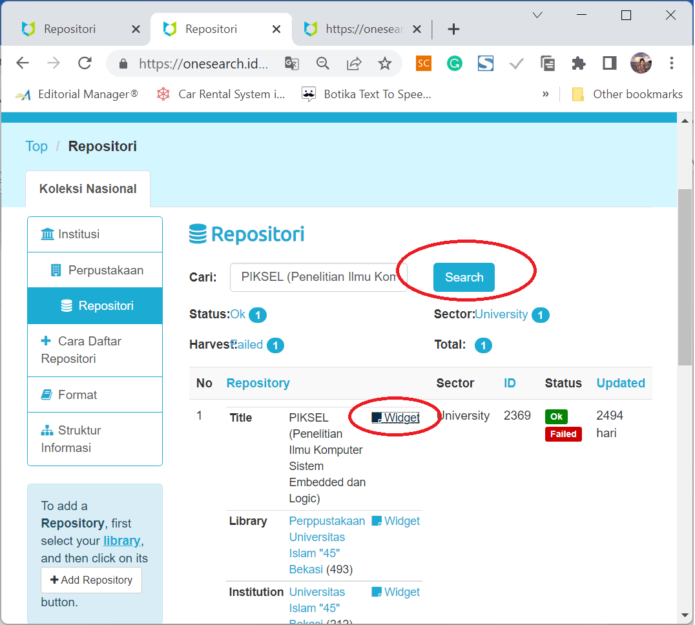

B. Modul Institusi
Modul ini berisi cara mendaftarkan Institusi, Library, dan Repository. Hanya institusi di wilayah Republik Indonesia yang diperbolehkan.
1. Menambah dan Mengatur Institusi
Untuk menambah dan Mengatur Institusi anda perlu Login terlebih dahulu. Tekan Organisasi Mitra dilanjutkan dengan menekan Daftarkan Institusi Anda.

Perhatikan informasi alur pendaftaran. Pastikan apakah institusi Anda sudah terdaftar atau tidak. Jika belum terdaftar, Anda dapat mendaftarkan institusi Anda. Pastikan jenis institusi Anda sesuai dengan aturan Perpusnas.

Selanjutnya mengisi form institusi.

2. Menambah dan Mengatur Perpustakaan
Untuk Menambah Perpustakaan Anda harus memiliki institusi terlebih dahulu. Masuk ke Institusi Anda lewat kolom pencarian, kemudian tekan +tambah perpustakaan.

Lanjutkan dengan mengisi informasi perpustakaan Anda.

3. Menambah dan Mengatur Repository
Untuk Menambah Repository Anda harus masuk terlebih dahulu ke Institusi dan your Library. Cari perpustakaan tempat bernaung repository melalui kolom pencarian.

Jika sudah ditemukan, tekan + Add Repository. Pastikan repository belum didaftarkan.

Isi Repository Form dengan benar, terutama di bagian Home URL, Cover URL dan OAI Base URL agar harvesting berjalan dengan sempurna. Bagian Repository Group harap Tidak Diisi, karena akan diisi oleh ADMIN perpusnas atau ADMIN konsorsium.

4. Mengatur Widget
Cari library Anda, dan tekan Widget. Selanjutnya Anda akan memperoleh Code widget yang dapat Anda tempelkan di library Anda sebagai informasi bahwa Library Anda sudah terindeks OneSearch. User selesai sampai tahap ini, dilanjutkan oleh proses verifikasi dan harvesting oleh admin perpusnas.

Widget juga untuk Institusi dan Perpustakaan. Widget sebagai bukti bahwa Institusi, Perpustakaan, dan Repository Anda sudah terindeks pada Indonesia One Search (IOS)